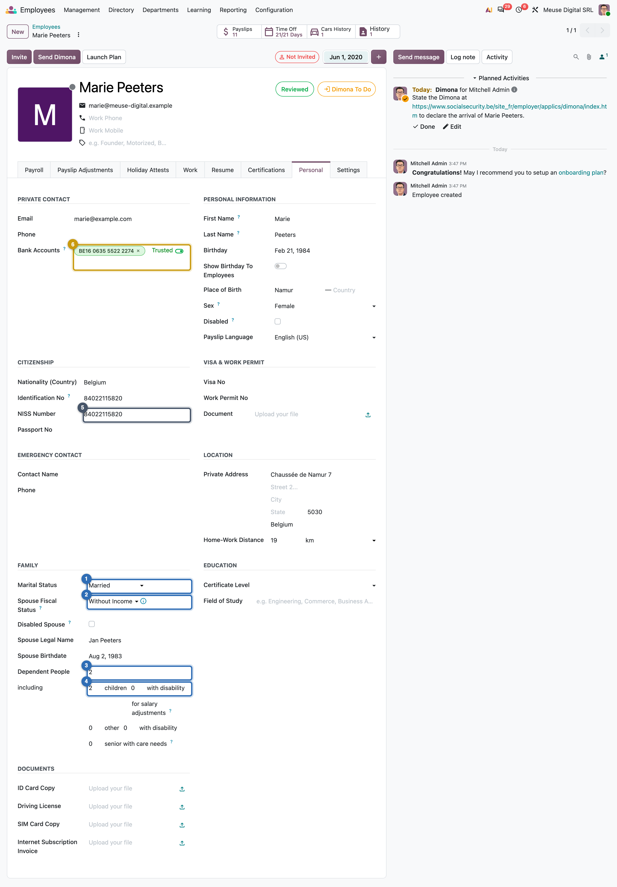
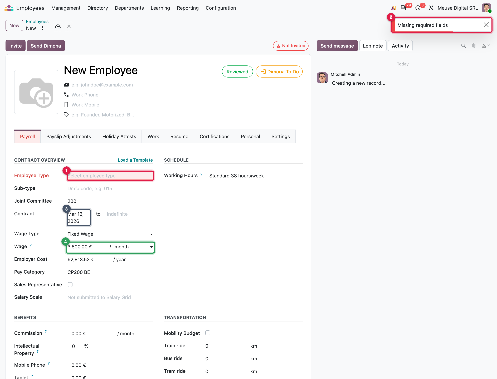
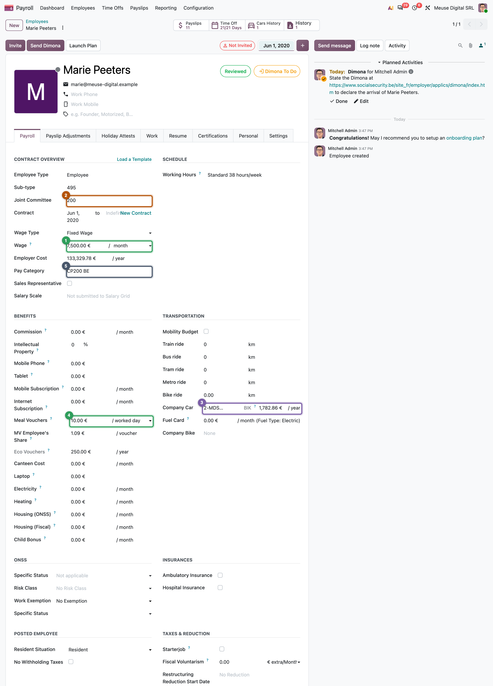
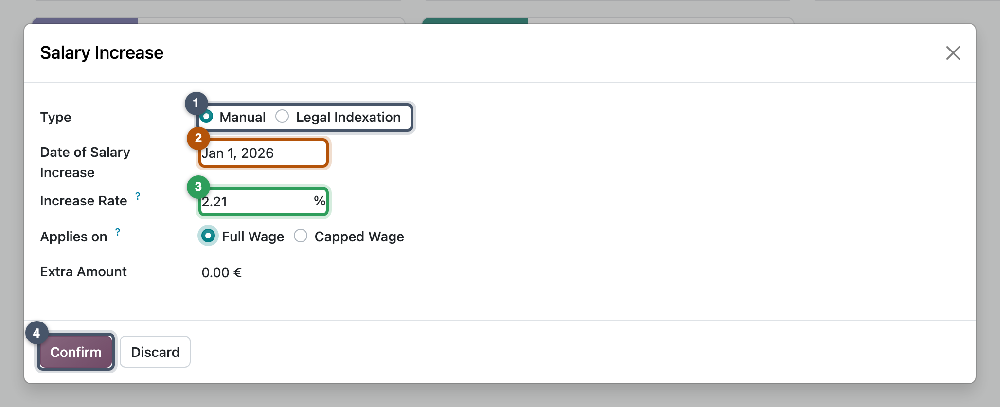

Employees and versions
One employee, a dated record per change, and every pay element in its right place
- Read an employee form and say which fields payroll uses, and why
- Explain what a version is, how versions follow each other, and what a contract is on top of them
- Distinguish wage, wage type, pay frequency and pay category
- Choose between a version field, a payslip input and a payslip adjustment for a pay element
- Hire an employee and give a raise in Odoo without rewriting history
This spring Yannick joins MyVidangeCompany on 12 March, and Jurgen gets a raise from 1 May. Each time payroll must know what was agreed and from when. Odoo answers with one idea: the employee's terms live in versions, dated records that follow each other.
The employee: who is paid
The employee form holds the person: identity, family, address, bank account. Tax and social security depend on several of these fields.

| Field group | Why payroll needs it |
|---|---|
| Family situation ①–④ | the withholding tax grants reductions for a dependent spouse and children (Chapter 4) |
| National number ⑤ | identifies the worker in every social security and tax declaration (Chapter 17) |
| Bank account ⑥ | where the net goes; the SEPA file reads it (Chapter 16) |
Common pitfall: an employee is not complete when the form saves
Odoo saves an employee without a national number or a bank account. The dashboard then shows one card per gap, and declarations refuse the employee later. After every hire, look at the dashboard. (The reverse also holds: a few contract fields are required.)

The version: what is agreed, from when
The Payroll tab belongs to a version (hr.version); the employee shows the one current today. A version starts on its effective date and stays valid until the next one starts.

| Field | Meaning |
|---|---|
| Effective date (date_version) | the day this version starts |
| Contract (contract_date_start, contract_date_end) | the employment contract's dates, shared by all its versions |
| Wage Type, Wage | a fixed amount per pay period, or an hourly rate |
| Working Hours | the schedule; the denominator of every proration (Chapter 14) |
| Pay Category (structure_type_id) | the structure type, so the rules that will run |
How versions follow each other
flowchart LR
classDef earn fill:#E3F4EA,stroke:#2E9E5B,stroke-width:2px,color:#1E293B;
classDef ded fill:#FBE5E5,stroke:#D64545,stroke-width:2px,color:#1E293B;
classDef emp fill:#EEE8F6,stroke:#7B5EA7,stroke-width:2px,color:#1E293B;
classDef tax fill:#E2ECF8,stroke:#2F6DB5,stroke-width:2px,color:#1E293B;
classDef net fill:#FBF3D9,stroke:#C99A0E,stroke-width:2px,color:#1E293B;
classDef odoo fill:#E9EDF2,stroke:#475569,stroke-width:2px,color:#1E293B;
classDef law fill:#FDF0E1,stroke:#B45309,stroke-width:2px,color:#1E293B;
classDef neutral fill:#F4F6F8,stroke:#64748B,stroke-width:2px,color:#1E293B;
subgraph C1["Contract: from 1 Apr 2023, no end"]
direction LR
V1["Version 1<br/>effective 1 Apr 2023<br/>wage 2,300"] --> V2["Version 2<br/>effective 1 May 2026<br/>wage 2,500"]
end
class V1 earn;
class V2 emp;This is Jurgen after Mission 13.4. Version 1 ends the day before version 2 starts; you never type an end date. Both belong to the same contract because they share the contract dates: a contract is not a separate record but the run of versions with the same start and end.
Key idea: one payslip may read several versions
A payslip belongs to the version valid at its start, but its worked days are computed for every version of the same contract active in the period. A raise on 15 May gives one May payslip with two sets of worked-days lines, each valued at its own wage. A new contract gives a separate payslip.
In Belgium
Two versions share a payslip when they have the same Dimona category (the class of worker declared at hiring) and worker code, whatever their contract dates. The Sub-type field (495 for a white-collar employee) is that worker code.
Common pitfall: editing the wage instead of adding a version
Typing 2,500 into Jurgen's current version rewrites the past: January to April would look as if he always earned 2,500. Add a version dated 1 May with the + button instead.
Raising many employees at once
A sector-wide indexation is a new version per employee. The Salary Increase action (select employees, then Actions) creates them in one go (Chapter 11 explains indexation).

Wage, wage type, pay frequency
The wage type is a fixed amount or an hourly rate. The pay frequency comes from the structure type. The wage is an amount per pay period: on a semi-monthly type it is a half-month amount. Always read the unit next to the number.
Benefits are fields, read by rules
Marie's car and meal vouchers are fields of her version, read by the rules every month:
| On the version | On Marie's February payslip | Line code |
|---|---|---|
| Company car, yearly benefit 1,782.86 € | benefit in kind added to the taxable base: 136.77 €, then deducted again from net | ATN.CAR, ATN_DED |
| Meal voucher 10.00 €, employee share 1.09 € | 20 worked days × 1.09 € = −21.80 € on net; employer part 178.20 € | MEAL_V_EMP, MEAL_VOUCHER_EMPLOYER |
A benefit in kind is taxed as if paid in cash, then removed before net pay (Chapter 2).
Around the world
- Belgium: about 250 fields on the version (cars, vouchers, insurances, family, Dimona).
- Switzerland: about 100.
- India: about 50.
- United States: about 30.
- Netherlands: one. Same engine; only the legal data around the employee varies.
A contract template is a version without an employee; Load a Template copies its fields onto the current version.
Three places for a pay element
flowchart TD
classDef earn fill:#E3F4EA,stroke:#2E9E5B,stroke-width:2px,color:#1E293B;
classDef ded fill:#FBE5E5,stroke:#D64545,stroke-width:2px,color:#1E293B;
classDef emp fill:#EEE8F6,stroke:#7B5EA7,stroke-width:2px,color:#1E293B;
classDef tax fill:#E2ECF8,stroke:#2F6DB5,stroke-width:2px,color:#1E293B;
classDef net fill:#FBF3D9,stroke:#C99A0E,stroke-width:2px,color:#1E293B;
classDef odoo fill:#E9EDF2,stroke:#475569,stroke-width:2px,color:#1E293B;
classDef law fill:#FDF0E1,stroke:#B45309,stroke-width:2px,color:#1E293B;
classDef neutral fill:#F4F6F8,stroke:#64748B,stroke-width:2px,color:#1E293B;
Q{"How long does<br/>the element last?"}
Q -- "every month, part of the terms" --> E1["Version field<br/>Payroll tab"]
Q -- "this payslip only" --> E2["Payslip input<br/>Salary Inputs tab"]
Q -- "a recurring deduction or credit,<br/>maybe with a balance" --> E3["Payslip adjustment<br/>Payslip Adjustments tab"]
class E1,E2,E3 odoo;| Level | Stored in | MyVidangeCompany example |
|---|---|---|
| Version field | a field on hr.version, read by the rules | Marie's car and meal vouchers |
| Payslip input | hr.payslip.input, read as inputs['CODE'] |
Emma's notice of 24 weeks (Chapter 17) |
| Payslip adjustment | hr.salary.attachment, an input on every payslip until the balance is reached | a wage garnishment, a loan repaid monthly |
In practice: one change, one version
Date each version at the day the change takes effect, not the day you type it. If that day is in a validated month, add the version anyway: Odoo flags the payslips as outdated (Chapter 15 corrects them).
Missions
Mission 13.1 · Hire the first four ★★
Situation. On 1 January 2026 MyVidangeCompany employs four people on open-ended contracts. Marie is married to a spouse without income and has two dependent children; the others are single without children.
| Employee | Job | Contract start | Wage (€/month) | Born | Sex | National number | IBAN |
|---|---|---|---|---|---|---|---|
| Mélanie | Developer | 01/02/2021 | 4,000.00 | 14/05/1993 | F | 93051412288 | BE14 0635 5500 0083 |
| Jurgen | Support Agent | 01/04/2023 | 2,300.00 | 03/09/1998 | M | 98090321174 | BE15 0635 5511 1130 |
| Marie | Engineering Manager | 01/06/2020 | 7,500.00 | 21/02/1984 | F | 84022115820 | BE16 0635 5522 2274 |
| Emma | Ops Lead | 01/10/2019 | 5,000.00 | 09/11/1981 | F | 81110920443 | BE18 0635 5544 4465 |
Your goal. Create the four employees, each with a version at the right wage and start date, and a bank account Odoo may pay to.
Check. Each version is on CP200 BE, sub-type 495, Standard 38 hours/week. Employer cost per year: Mélanie 69,792.80 €, Jurgen 40,130.86 €, Emma 87,241.00 €, Marie 130,861.50 €.
Hint
The contract start is the "Not Employed" placeholder on the Payroll tab, and the form needs an Employee Type. A bank account must be trusted (Send Money) before a bank file can use it.
Mission 13.2 · Marie's car and meal vouchers ★★
Situation. Marie drives an electric Volkswagen ID.4, plate 2-MDS-726, catalogue value 52,000.00 € including VAT, CO₂ 0 g/km, first registered on 5 January 2026. She gets meal vouchers of 10.00 € a worked day, of which she pays 1.09 €.
Your goal. Register the car in Fleet with Marie as driver, and put the car and the vouchers on her version.
Check. The car's benefit in kind is 1,782.86 € / year; Marie's employer cost rises to 133,329.78 € / year; meal vouchers 10.00 € per worked day, employee share 1.09 €.
Hint
The model ID.4 does not exist yet: create it in Fleet's configuration. On the version, tick the company car before you choose it.
Mission 13.3 · Read the dashboard ★
Situation. Your manager asks: "What is Odoo complaining about, now that we have staff?"
Your goal. List the dashboard cards, open the records behind each blue or orange one, and fix the card about the work address.
Check. 6 cards. Missing Salary Indexation Employees lists 4 employees; Drivers Without Running Contract points at the car 2-MDS-726. Once the company has a social security establishment unit, Missing ONSS identification code is gone (a blue Missing DMFA establishment unit language card takes its place: leave it).
Hint
The address card wants a work location of type DMFA Unit at MyVidangeCompany's address (Configuration > Belgium > Work Locations). For the car, read what the warning really checks (Configuration > Dashboard > Warnings): a lease, not an employment contract.
Mission 13.4 · Yannick joins, Jurgen gets a raise ★★
Situation. Yannick (born 30 July 1996, male, national number 96073031772, IBAN BE17 0635 5533 3321) starts as a designer at 3,600.00 € a month on Thursday 12 March 2026. Jurgen's wage goes from 2,300.00 € to 2,500.00 € from 1 May 2026; his earlier months must stay as they are.
Your goal. Hire Yannick from 12 March, and record Jurgen's raise so that January to April still use 2,300.00 €.
Check. Yannick's version is effective 12/03/2026, CP200 BE, sub-type 495, employer cost 62,813.52 € / year. Jurgen has 2 versions: the first ends on 30/04/2026 (40,130.86 € / year), the second starts on 01/05/2026 at 2,500.00 € (43,620.50 € / year); his contract start stays 01/04/2023.
Hint
Yannick: same form as Mission 13.1. Jurgen: do not type over the wage; use the + next to the version date in the header.
Summary
- The employee holds the person (identity, family, bank); the version holds the agreed terms (wage, schedule, pay category, benefits).
- A version starts on its effective date and ends the day before the next one; a contract is the run of versions sharing the same contract dates.
- A payslip reads every version of the same contract active in its period; a new contract means a separate payslip.
- The wage is an amount per pay period; the pay frequency comes from the structure type.
- Benefits are version fields read by rules; one-off amounts are payslip inputs; recurring deductions with a balance are payslip adjustments.
- Hire with the contract start date, raise with a new version, and read the dashboard after each.